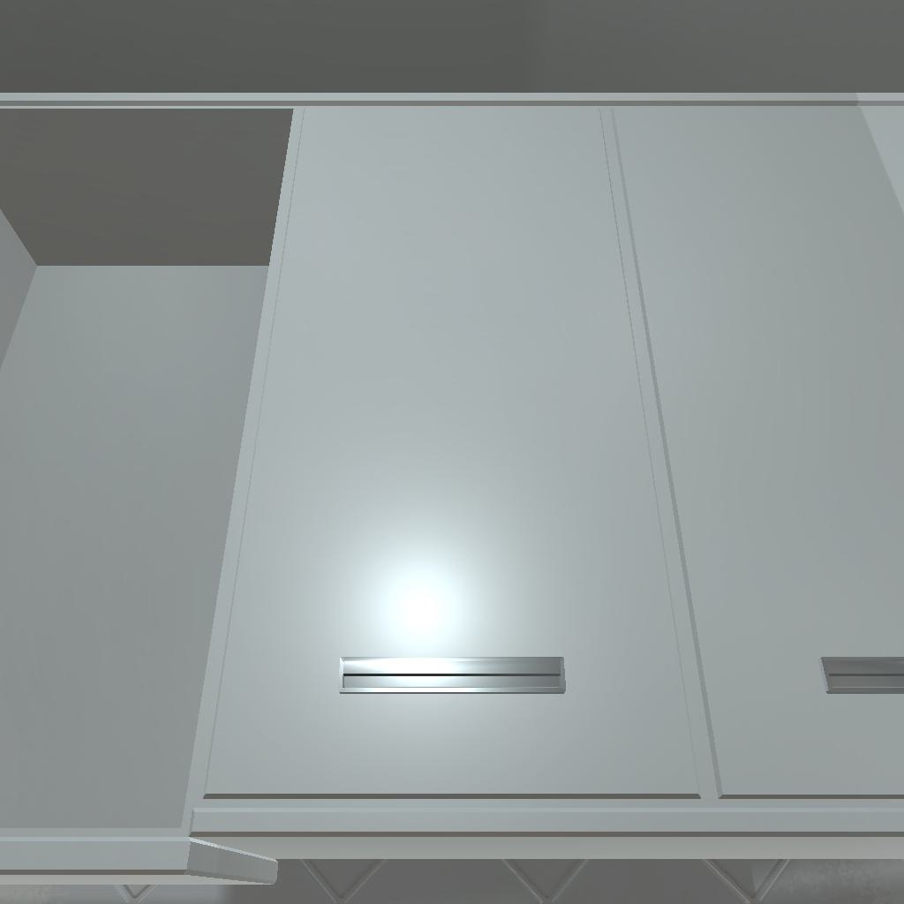

---------------------------------------------------------task: 21---------------------------------------------------------
--------------------------------------------------------------------------------------------------------------------------------------------------------------------
--------------------------------------------------------------------------------------------------------------------------------------------------------------------
Step:--------------------------------------------------------------------------19-------------------------------------------------------------------------------
----------------------------------------
VLM Prompt:
Image1:
Image2:
**Instruction**
1. Analyze the provided images to identify all visible household objects and compare the difference between images (e.h. whether the object is opened or not and taken on hand or not), focusing on those relevant to the task description "put a hot cup in countertop."
2. Use the analysis of images and the task hint "The agent must find an object of the desired type, pick it up, go to a microwave, heat the object with the microwave, then find the correct location to place it, and put it down there. The agent does not need to use the microwave button or open the microwave to heat the object, and the agent just needs to do action that is "heat the object with the microwave"." to answer the question: what is the most reasonable action in the choices for the task description "put a hot cup in countertop"?
3. Decide and write the answer using the template: The answer is: (i): , where i is the real number. If there is no desired object in images, search every place based on **Initial Observation** to find the object. And if no one is exactly correct, choose a similar answer.
**Initial Observation**
You are in the middle of a room. Looking quickly around you, you can see cabinet (1-6), microwave (1), countertop (1-2), coffeemachine (1), toaster (1), sink (1), sinkbasin (1), fridge (1)
**Answer Choices**
(1): go to cabinet 3
(2): go to microwave 1
(3): go to cabinet 4
(4): go to cabinet 5
(5): go to cabinet 6
(6): go to countertop 1
(7): go to coffeemachine 1
(8): go to toaster 1
(9): go to countertop 2
(10): go to sink 1
(11): go to sinkbasin 1
(12): go to fridge 1
(13): open cabinet 2
(14): close cabinet 2
(15): take nothing from cabinet 2
(16): examine cabinet 2
**Answer**
Let's think step by step by following the instructions.
----------------------------------------
----------------------------------------
Original Response:
First, we analyze the provided images. Both images appear to be identical and show a closed cabinet, presumably cabinet 2, based on the task description that involves cabinets 1-6. There are no visible objects in the images relevant to the task of "put a hot cup in countertop," such as a cup or a microwave.
Given the task description and hint, the agent must find a cup, heat it in the microwave, and place it on the countertop. Since there is no visible cup in the images and the cabinet in the image is closed, the agent must search for the cup.
Based on the initial observation, the agent is in a room with several cabinets, a microwave, countertops, and other appliances. Since the agent needs to heat a cup, the logical locations to search for a cup would be the cabinets or possibly the sink basin if the cup has been used before.
Considering the answer choices and the fact that the agent does not need to use the microwave button or open the microwave to heat the object, the most reasonable action would be to first find the cup. Therefore, the agent should go to one of the cabinets that have not been shown in the image to search for the cup.
The answer is: (1): go to cabinet 3. This action is chosen because it is the next sequential cabinet number after the one shown in the images, and it is a reasonable place to start searching for a cup. If the cup is not found in cabinet 3, the agent can continue searching the other cabinets.
----------------------------------------
----------------------------------------
>>> Refine Original VLM Response and Get Pure Action: go to cabinet 3
----------------------------------------
-----------------------------------------------------------------
Running time: 15.796280145645142 seconds
Total Money: 10.912550000000001
-----------------------------------------------------------------
-----------------------------------------------------------------
Text Observation:You arrive at loc 2. The cabinet 3 is closed.
-----------------------------------------------------------------
UNSUCCEED